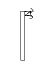
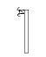
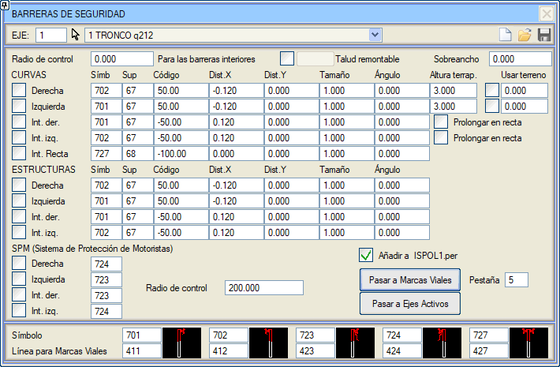
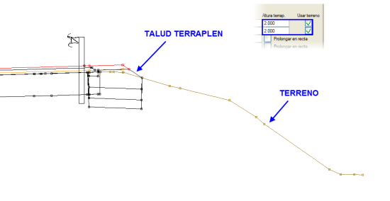
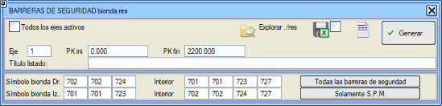

Bu araç, dolgu yüksekliğinin belirtilen bir değeri aştığı durumlarda, enkesitlerimize kütüphaneden güvenlik bariyerlerini temsil eden bir sembolü, belirli bir yüzey üzerine ve tam bir konuma yerleştirmeyi sağlar. Bölünmüş yollarda, refüjün sol ve sağ iç kısımlarına da yerleştirme imkanı ayrıca değerlendirilir.

Doldurulacak seçenekler şunlardır:
- Sembol: Enkesitlere yerleştirilecek sembol (varsayılan S701 ve S702).
- Yüzey: Sembolün yerleştirileceği yüzey.
- Kod: Sembolün yerleştirileceği kod.
- X/Y Mesafesi: Sembolü yerleştirmek için belirtilen koddan itibaren yapılacak öteleme.
- Boyut/Açı: Yerleştirilecek sembolün göreceli boyutu ve yatayla yaptığı açı.
- Dolgu Yüks.: Bir bariyer konulması gerektiğinin kabul edildiği dolgu üzerindeki yükseklik.
- Araziyi Kullan:
Bazı durumlarda, projelendirilen dolgu topuğu, güvenlik bariyerinin yerleştirilmesi için öngörülen yükseklikten daha düşük bir kotta araziye oturur, ancak arazi profili (örneğin mevcut bir dolgu olduğu için) alçalmaya devam eder ve bu durumu dikkate alarak yüksekliği kontrol etmek istenir. Bu gibi durumlarda, Araziyi Kullan kutucuğu etkinleştirilerek, platform kenarı ile platform dışındaki ve kamulaştırma sınırına kadar olan arazinin en düşük kotu arasındaki yükseklik analiz edilir. Böylece, toplam dolgu yüksekliğine bağlı olarak güvenlik bariyerlerinin yerleştirilip yerleştirilmeyeceği kontrol edilir. Bitişikteki kutucukta bir mesafe de tanımlanabilir: sıfırdan büyük ve kamulaştırma sınırından küçük bir değer verilirse, arazi analizi dolgu topuğundan itibaren ölçülen bu mesafe ile sınırlandırılır.

- Düzlükte Uzat: İç sol ve sağ bariyerleri düzlükte uzatır.
- Kontrol Yarıçapı:
İç bariyerler için, bu değerin üzerindeki yarıçaplara sahip kurplar,
güvenlik bariyerlerinin yerleştirilmesi açısından düzlük olarak kabul edilecektir.
- Tırmanılabilir Şev:
Bu değerden daha düşük dolgular "tırmanılabilir" olarak kabul edilecek
ve bu nedenle üzerlerine güvenlik bariyeri yerleştirilmeyecektir.
- Genişletme: Bir bariyer yerleştirilmesi durumunda palyeye eklenen ek genişlik.
[Yol Çizgilerine Aktar]'a tıklandığında, oluşturulan tüm oto korkuluklar YOL ÇİZGİLERİ sekmelerinden birine (varsayılan olarak 5. sekmeye) aktarılabilir. Bu araç, bariyerlerin ISPOLn.per dosyasına dahil edilmesini devre dışı bırakır: bu andan itibaren, bariyerler YOL ÇİZGİLERİ'ndeki tanımlarından oluşturulacaktır. Enkesit için kullanılan her sembol tipi, belirli bir çizgi tipiyle ilişkilendirilebilir.
Eğer ISPOLn.per'e Ekle seçeneği aktifse, aşağıdaki adımları gerçekleştiren Aktif Eksenlere Aktar aracı etkinleşir:
- Mevcut güvenlik bariyerleri yapılandırmasını kaydeder.
- Tüm aktif eksenleri tarar.
- Bu yapılandırmayı her eksen için kopyalar.
- Ekseni hesaplar.
- Her eksen için Yol Çizgilerine Aktar'ı çalıştırır.
- ISPOLn.per'e Ekle seçeneğini devre dışı bırakır.
- Değiştirilmiş .vol dosyasını kaydeder.
Motosiklet Koruma Sistemi
Bu
diyalog kutusundan, yarıçapın belirtilen kontrol yarıçapından
daha küçük olması durumunda (bu koşulun sağlandığı klotoid kısmı dahil), programın kurpların dış tarafları için farklı bir
sembol kullanması sağlanabilir. Bu, geleneksel güvenlik bariyerleri ile
motosikletçiler için koruma sistemlerini ayırt etmeyi sağlar. Varsayılan olarak kontrol
yarıçapı otoyollarda 750 m, diğer yollarda 200 m'dir.
Güvenlik bariyerleri listesi
Güvenlik bariyerleri listesinin oluşturulması için olan diyalog kutusunda,
tüm oto korkulukları veya sadece
motosiklet koruma sistemine sahip olanları listeleme imkanı verilir. Aynı şekilde, bu listeden elde edilen verilerle yol çizgileri kutusuna yüklemek için bir dosya (biondaN.mcv) oluşturulmasına da olanak tanır.

Tüm aktif eksenler kutucuğu etkinleştirilerek, projemizdeki aktif olan tüm eksenler için güvenlik bariyerleri listesini elde ederiz.
|